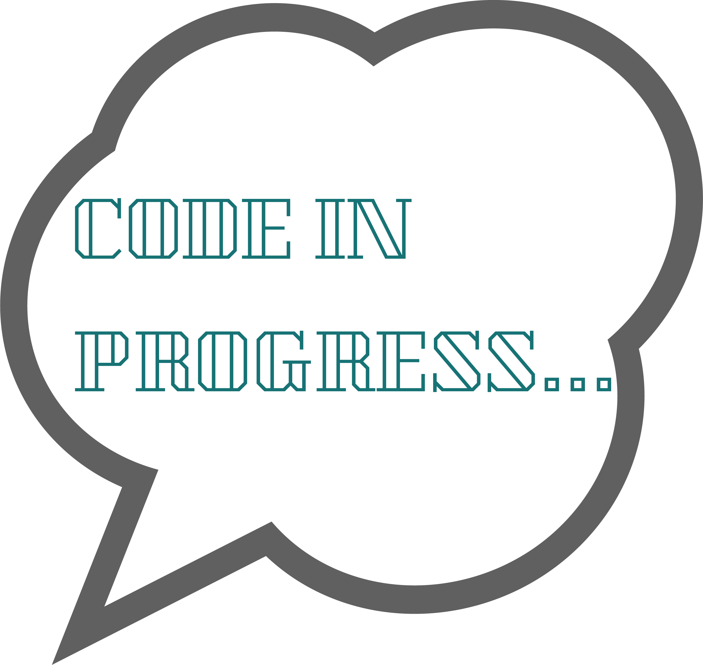
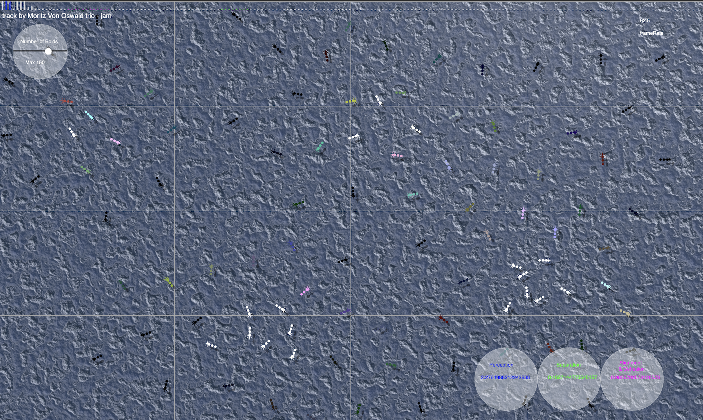
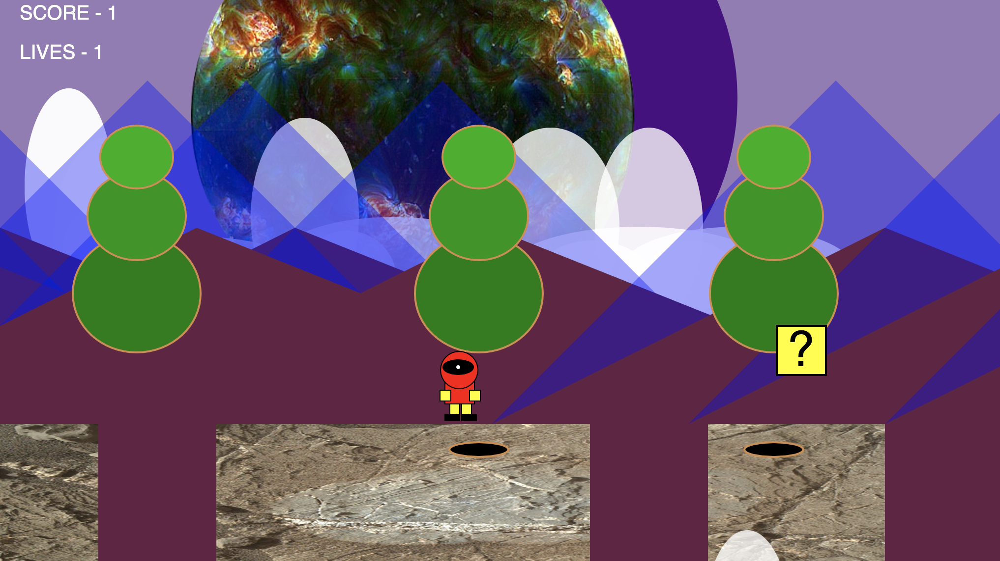

Projects

HOME
PROJECTS
GET IN TOUCH

The core idea of our project is an expriment discovering the behavior of t-cell bacteria affected by sound waves which is not something you can observe in the real world. The strangle and peculiar patterns are generated expressing the dancing moves which is considered to be the artificial creativity.
This project is a software application written in C++ using OpenFrameworks. The purpose of the project is to explore possibilities of interactivity between Leap Motion as the input device for interaction with multimedia, exploring its potential to create new practical implementations in digital media production. I would describe this project a symbiosis of plastic arts and musical synthesis.

A simple game project where a character has to go through the 2D environment collecting points and jumping over the deadly voids.
My creative vision of Alice in Wonderland recreated in 3D. The program is using multiple light sources, texutres and models. Built with WebGL & P5js library
Find me on socials: